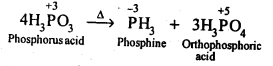
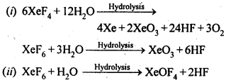

NCERT Solutions For Class 12 Chemistry Chapter 7 The p Block Elements
Topics and Subtopics in NCERT Solutions for Class 12 Chemistry Chapter 7 The p Block Elements:
| Section Name | Topic Name | Section Name | Topic Name |
| 7 | The p-Block Elements | 7.12 | Simple Oxides |
| 7.1 | Group 15 Elements | 7.13 | Ozone |
| 7.2 | Dinitrogen | 7.14 | Sulphur – Allotropic Forms |
| 7.3 | Ammonia | 7.15 | Sulphur Dioxide |
| 7.4 | Oxides of Nitrogen | 7.16 | Oxoacids of Sulphur |
| 7.5 | Nitric Acid | 7.17 | Sulphuric Acid |
| 7.6 | Phosphorus – Allotropic Forms | 7.18 | Group 17 Elements |
| 7.7 | Phosphine | 7.19 | Chlorine |
| 7.8 | Phosphorus Halides | 7.20 | Hydrogen Chloride |
| 7.9 | Oxoacids of Phosphorus | 7.21 | Oxoacids of Halogens |
| 7.10 | Group 16 Elements | 7.22 | Interhalogen Compounds |
| 7.11 | Dioxygen | 7.23 | Group 18 Elements |
NCERT Solutions CBSE Sample Papers ChemistryClass 12 Chemistry
NCERT IN TEXT QUESTIONS
7.1. Why are pentahalides more covalent than trihalidcs?
Ans: The group 15 elements have 5 e-1 s in their valence shell. It is difficult to lose 3e-1s to form E3+ and even more difficult to lose 5e-1 s to form E5+. Thus, they have very little tendency to form ionic compounds. Further, since the elements in +5 state have less tendency to lose e-1s than in the +3 state, elements in +5 state have more tendency to share e-1 s and hence pentahalides are more covalent than trihalides.
7.2. Why is BiH3 the strongest reducing agent amongst all the hydrides of group 15 elements? (C.B.S.E. 2013)
Ans: Down the group, the atomic size of the element (E) increases and the bond length of the corresponding E—H bond also increases. This adversely affects the bond dissociation enthalpy. This means that amongst the trihydrides of the members of nitrogen family, the bond dissociation enthalpy of Bi—H bond is the least. Therefore, BiH3 is the strongest reducing agent among the hydrides of group 15 elements.
7.3. Why is N2 less reactive at room temperature?
Ans: Due to presence of triple bond between two N-atoms (N = N), the bond dissociation energy of N2 is very high. As a result, N2 becomes less reactive at room temperature.
7.4. Mention the conditions required to maximise the yield of ammonia.
Ans: Ammonia is prepared by Haber’s process as given below:
7.5. How does ammonia react with a solution of Cu2+?
Ans:
7.6. What is the covalence of nitrogen in N2O5 ?
Ans: In N2O5 , each N-atom has four shared pairs of e-1 s as shown:
7.7. Why is bond angle in \({ PH }_{ 4 }^{ + }\) ion higher than in PH3 ? (Pb. Board 2009)
Ans: In both PH3 and \({ PH }_{ 4 }^{ + }\) ion, the phosphorus atom is sp3 hybridised. However, in PH3 the central atom has apyramidal structure due to the presence of lone electron pair on the phosphorus atom.
Because of lone pair : shared pair repulsion which is more than that of shared pair : shared pair repulsion, the bond angle in PH3 is nearly 93-6°. In \({ PH }_{ 4 }^{ + }\) ion, there is no lone electron pair on the phosphorus atom. It has a tetrahedral structure with bond angle of 109°-28′. Thus, the bond angle in \({ PH }_{ 4 }^{ + }\) ion is higher than in PH3.
7.8. What happens when white phosphorus is heated with concentrated NaOH solution in an inert atmosphere of CO2?
Ans:
7.9. What happens when PCl5 is heated?
Ans:
7.10. Write a balanced equation for the hydrolytic reaction of PC is in heavy water.
Ans:
7.11. What is the basicity of H3PO4?
Ans:
7.12. What happens when H3PO4 is heated?
Ans: On heating, H3PO3 disproportionates to form PH3 and H3PO4 with O.S. of-3and + 5.
7.13. List the important sources of sulphur.
Ans: Sulphur mainly occurs in the combined states in earth’s crust in the form of sulphates and sulphides.
Sulphates : gypsum (CaSO4.2H2O); epsom (MgSO4.7H2O); baryte (BaSO4), etc.
Sulphides : Galena (PbS); zinc blende (ZnS); copper pyrites (CuFeS2); iron pyrites (FeS2), etc. Traces of sulphur occur’as H2S and in organic materials such as eggs, proteins, garlic, onion, mustard, hair and wool.
7.14. Write the order of thermal stability of the – hydrides of Group 16 elements.
Ans: The thermal stability of hydrides of group 16 elements decreases down the group. This is because down the group, size of the element (M) increases, M-H bond length increases and thus, stability of M-H bond decreases so that it can be broken down easily. Hence, we have order of thermal stability as H2O > H2S > H2Se > H2Te > H2PQ
7.15. Why is H2O a liquid and H2S a gas?
Ans: Due to high electronegativity of O than S, H2O undergoes extensive intermolecular H-bonding. As a result, H2O exists as an associated molecule in which each O is tetrahedrally surrounded by four H2O molecules. Therefore, H2O is a liquid at room temperature.
On the other hand,H2S does not undergo H- bonding. It exists as discrete molecules which are held together by weak van der waals forces of attraction. A small amount of energy is required to break these forces of attraction. Therefore, H2S is a gas at room temperature.
7.16. Which of the following does not react with oxygen directly? Zn, Ti, Pt, Fe
Ans: Platinum (Pt) is a noble metal and does not react with oxygen directly.
7.17. Complete the following reactions:
(i)C2H2 + O2 -> (ii) 4Al + 3 O2 ->
Ans:
7.18. Why does O3 act as a powerful oxidising agent?
Ans: On heating, O3 readily decomposes to give O2 and nascent oxygen.
Since nascent oxygen is very reactive, therefore, O3 acts as a powerful oxidising agent.
7.19. How is O3 estimated quantitatively?
Ans: When O3 is treated with excess of KI solution buffered with borate buffer (pH = 9.2), I2 is liberated quantitatively.
The I2 thus liberated is titrated against a standard solution of sodium thiosulphate using starch as an indicator.
7.20. What happens when sulp’hur dioxide is passed through an aqueous solution of Fe(III) salt?
Ans: SO2 acts as a reducing agent and reduces aqueous solution of Fe (III)salt to Fe (II) salt.
7.21. Comment on the nature of two S-O bonds formed in S02 molecule. Are the two S-O bonds in this molecule equal ?
Ans: SO2 exists as an angular molecule with OSO bond angle of 119.5°. It a resonance hybrid of two canonical-forms:
7.22. How is the presence of SO2 detected?
Ans: SO2 is a pungent smelling gas. It can be detected by two test:
7.23. Mention three areas in which H2SO4 plays an important role.
Ans: (i) Sulphuric acid is used for the manufacture of a number of chemicals like hydrochloric acid, phosphoric acid, nitric acid along with a large number of organic compounds.
(ii) A mixture of concentrated nitric acid and concentrated sulphuric acid is used in the manufacture of explosives like picric acid, T.N.T, dynamite etc.
(iii) Dilute solution of acid is employed in petroleum refining in order to remove the unwanted impurities of sulphur.
Question 24.
Write the conditions to maximise the yield of H2SO4 by Contact process.
Solution:
The key step in the manufacture of sulphuric acid is oxidation of SO2 to SO3 in presence of V2O5 catalyst.
The reaction is exothermic and reversible. Hence, low temperature and high pressure are the favourable conditions for maximum yield of SO3. In practice a pressure of 2 bar and temperature of 720 K is maintained.
Question 25.
Why is Ka2 « Ka1 for H2SO4 in water?
Solution:
H2SO4 is a very strong acid in water largely because of its first ionisation to H3O+ and HSO4– The ionisation of HSO4– to H3O+ and SO42- is very very small. That is why, Ka2« Ka1.
Question 26.
Considering the parameters such as bond dissociation enthalpy, electron gain enthalpy and hydration enthalpy, compare the oxidising powers of F2 and Cl2.
Solution:
The oxidising powers of both the members of halogen family are expressed in terms of their electron accepting tendency and can be compared as their standard reduction potential values.
F2 + 2e– → 2F–; E° = 2-87 V, Cl2 + 2e– → 2Cl– ; E° = 1-36 V
Since the E° of fluorine is more than that of chlorine, it is a stronger oxidising agent.
Explanation : Three factors contribute towards the oxidation potentials of both the halogens. These are :
(i) Bond dissociation enthalpy: Bond dissociation enthalpy of F2 (158 kJ mol-1) is less compared to that of Cl2 (242·6 kJ mol-1).
(ii) Electron gain enthalpy: The negative electron gain enthalpy of F (- 332·6 kJ mol-1) is slightly less than of Cl (-348·5 kJ mol-1).
(iii) Hydration enthalpy: The hydration enthalpy of F- ion (515 kJ mol-1) is much higher than that of Cl- ion (381 kJ mol-1) due to its smaller size.
From the available data, we may conclude that lesser bond dissociation enthalpy and higher hydration enthalpy compensate lower negative electron gain enthalpy of fluorine as compared to chlorine. Consequently, F2 is a more powerful oxidising agent than Cl2.
Question 27.
Give two examples to show the anomalous behaviour of fluorine.
Solution:
- Ionisation enthalpy, electro-negativity and electrode potential are higher for fluorine than the expected trends of other halogen.
- Fluorine does not show any positive oxidation state except in HOF.
Question 28.
Sea is the greatest source of some halogens. Comment.
Solution:
Sea water contains chlorides, bromides and iodides of sodium, potassium, magnesium and calcium but sodium chloride being the maximum makes sea water saline. Various sea weeds contain upto 0.5% iodine.
Question 29.
Give the reason for bleaching action of Cl2.
Solution:
Chlorine bleaches by oxidation Cl2 + H2O → HCl + HOCl → HCl + [O]
The nascent oxygen reacts with dye to make it colourless.
Question 30.
Name two poisonous gases which can be prepared from chlorine gas.
Solution:
COCl2 (phosgene), CCl3NO2 (tear gas)
Question 31.
Why is ICI more reactive than l2?
Solution:
In general, interhalogen compounds are more reactive than halogens due to weaker X-X’ bonding than X-X bond. Thus, ICI is more reactive than I2.
Question 32.
Why is helium used in diving apparatus?
Answer:
Helium along with oxygen is used in the diving apparatus by the sea divers. Since it is very little soluble in blood, it reduces decompression and causes less discomfort to the diver in breathing. A mixture of helium and oxygen does not cause pain due to very low solubility of helium in blood as compared to nitrogen.
Question 33.
Balance the following equation :
XeF6 + H2O → XeO2F2 + 4HF
Solution:
Question 34.
Why has it been difficult to study the chemistry of radon?
Solution:
Radon is radioactive with very short half-life which makes the study of chemistry of radon difficult.
NCERT EXERCISES
7.1. Discuss the general characteristics of Group 15 elements with reference to their electronic configuration, oxidation state, atomic size, ionisation enthalpy and electronegativity.
Sol: In group 15 of the Periodic Table, the elements, nitrogen (7N), phosphorus (15P), arsenic (33As), antimony (51Sb) and bismuth (83Bi) are present. The elements of this group can exhibit various oxidation states ranging between -3 to + 5. Negative oxidation state will be exhibited when they combine with less electronegative element andpositive oxidation state will be exhibited with more electronegative element. Positive oxidation state becomes more favourable as we more down the group due to increasing metallic character & electropositivity. Although due to inert pair effect the stability of +5 state will also decrease. The only stable compound of Bi (V) is BiF5.
The atomic (covalent) and ionic radii (in a particular oxidation state) of the elements of nitrogen family (group 15) are smaller than the corresponding elements of carbon family (group 14). On moving down the group, the covalent and ionic radii (in a particular oxidation state) increase with increase in atomic number. There is a considerable increase in covalent radius from N to P. However, from As to Bi, only a small increase is observed.
As the size increases on moving down the group, the ionisation enthalpy increases. The ionisation enthalpy of nitrogen group elements is more than the corresponding elements of oxygen group. This is because of more stable half-filled outermost p- subshell of nitrogen group elements. Electronegativity decreases down the group with increase in atomic size.
7.2. Why is the reactivity of nitrogen different from that of phosphorus?
Sol: Molecular nitrogen exists as a diatomic molecule (N2) in which the two nitrogen atoms are linked to each other by triple bond (N≡N). It is a gas at room temperature. Multiple bonding is not possible in case of phosphorus due to its large size. It exists as P4 molecule (solid) in which P atoms are linked to one another by single covalent bonds. Because of greater bond dissociation enthalpy (946 kJ mol-1) of N≡N bond, molecular nitrogen is very less reactive as compared to molecular phosphorus.
7.3. Discuss the trends in chemical reactivity of group 15 elements.
Sol: Hydrides: All elements of group 15 form gaseous hydrides of the type MH3.
In all the hydrides the central atom is sp3 hybridized and their shape is pyramidal due to presence of lone pair of electrons.
(a)The basic strength of the hydrides decreases as we move down the group.
Thus, NH3 is the strongest base.
NH3 > PH3 > AsH3 > SbH3
(b)The thermal stability of the hydrides decreases as the atomic size increases, i.e., the M – H bond strength decreases which means reducing character increases.
(c)In the liquid state, the molecules of NH3are associated due to hydrogen bonding. The molecules of other hydrides are not associated.
(d)NH3 is soluble in water whereas other hydrides are insoluble.
(e)All the hydrides, except NH3, are strong reducing agents and react with metal ions (Ag+, Cu2+, etc.) to form phosphides, arsenides or antimonides.
Halides: The elements of group 15 form two series of halides MX3 and MX5.
(a)All the elements of the group form trihalides. The ionic character of trihalides increases as we move down the group. Except NCl3 all the trihalides are hydrolysed by water. This is due to the absence of d-orbitals in nitrogen.
(b)PF3 is not hydrolysed because fluorine being more electronegative than oxygen forms more stable bonds with phosphorus than P – O bonds.
(c)N cannot form NX5 because of non-availability of rforbitals. Bi cannot form BiX3 because of reluctance of 6s electrons of Bi to participate in bond formation.
(d)The hybridisation of M in MX3 is sp3 and shape is pyramidal. M in MX5 is sp3 as hybridised and shape is trigonal pyramidal. The axial bonds in MX5 are weaker and longer, So MX5 are less stable and decompose on heating eg:
Oxides:
(a)Nitrogen forms a number of oxides. The rest of the members (P, As, Sb and Bi) of the group form two types of oxides : E203 and E2O5.
(b)The reluctance of P, As, Sb and Bi to enter into pπ -pπ multiple bonding leads to cage structures of their oxides and they exist as dimers, E4O6 and E5O10.
(c)The basic nature of die oxides increases with increase in atomic number of the element. Thus, the oxides of nitrogen (except N20 and NO), P (III) and As (III) are acidic, Sb (III) oxide is amphoteric and Bi (III) oxide is basic.
7.4. Why does NH3 form hydrogen bond but PH3 does not?
Sol: Nitrogen has an electronegativity value 3.0, which is much higher than that of H (2.1). As a result, N – H bond is quite polar and hence NH3 undergoes intermolecular H – bonding.
Phosphorus have an electronegativity value 2-1. Thus, P – H bond is not polar and hence PH3 does not undergo H – bonding.
7.5. How is nitrogen prepared in the laboratory? Write the chemical equations of the reactions . involved.
Sol: In laboratory, nitrogen is prepared by heating an equimolar aqueous solution of ammonium chloride and sodium nitrite. As a result of double decomposition reaction, ammonium nitrite is formed. Ammonium nitrite is unstable and decompose to form nitrogen gas.
7.6. How is ammonia manufactured industrially?
Sol: Commercially, by Haber’s process.
iron oxide, K2O, Al203 The optimum conditions for the production of NH3 are pressure of 200 atm and temperature of 100K.
7.7. Illustrate how copper metal can give different products on reaction with HN03.
Sol: On heating with dil HN03, copper gives copper nitrate and nitric oxide.
7.8. Give the resonating structures of N02 and N2O5.
Sol: Resonating structures of N02 are:
7.9. The HNH angle value is higher than HPH, H AsH and HSbH angles. Why?
(Hint: Can be explained on the basis of sp3 hybridisation in NH3 and only s-p bonding , between hydrogen and other elements of the group).
Sol: In all these cases, the central atom is sp3 hybridized. Three of the four sp3 orbitals form three σ-bonds, while the fourth contains the lone pair of electrons. On moving down from N to Sb, the electronegativity of the central atom goes on decreasing. As a result of this, bond pairs of electrons lie away and away from the central atom. This is because of the force of repulsion between the adjacent bond pairs goes on decreasing and the bond angles keep on decreasing from NH3 to SbH3. Thus, bond angles are in the order:
7.10. Why does R3P=0 exist but R3N=0 does not (R is an alkyl group) ?
Sol: Nitrogen does not have vacant d-orbitals on its valence shell. Therefore, it cannot extend its dπ-pπ bonding is not possible. As a result, the molecules of R3N = 0 does not exist. However, phosphorus and rest of the members of the group 15 have vacant d-orbitals in the valence shell which can be involved in dπ-pπ bonding. Under the circumstances, R3P=0 molecule can exist.
7.11. Explain why NH3 is basic while BiH3 is only feebly basic.
Sol: In both NH3 and BiH3, N and Bi have a lone paif of electrons on the central atom and hence should behave as Lewis bases. But NH3 is much more basic than BiH3. Since the atomic size of N is much smaller than that of Bi, therefore, electron density on N-atom is much higher than that on Bi-atom. Thus, the tendency of N in NH3 to donate its lone pair of electrons is much more in comparison to tendency of Bi in BiH3. Hence, NH3 is more basic than BiH3.
7.12. Nitrogen exists as diatomic molecule and phosphorus as P4. Why?
Sol: Nitrogen exists as a diatomic molecule having a triple bond between the two N-atoms, This is due its small size that it forms pπ-pπ multiple bonds with itself and with carbon /oxygen as well. On the other hand, phosphorus due to its larger size does not form multiple pπ-pπ bonds with itself. It prefers to form P – P single bonds and hence it exists as tetrahedral P4 molecule.
7.13. Write main differences between the properties of white phosphorus and red phosphorus.
Sol:
Structure of white and red phosphorus are given below:
7.14. Why does nitrogen show catenation properties less than phosphorus ? (C.B.S.E. Foreign 2009)
Sol: The valence shell electronic configuration of N is 2s22p3. In order to complete the octet, the two nitrogen atoms share three electron pairs in the valence p-sub-shell and get linked by triple bond (N=N). Thus molecular nitrogen exists as discrete diatomic species and there is no scope of any self linking or catenation involving a number of nitrogen atoms. However, in case of phosphorus, multiple bonding is not feasible due to comparatively large atomic size of the element. Molecular phosphorus exists as tetra-atomic molecule (P4) in white phosphorus. These tetrahedrons are further linked by covalent bonds to form red variety which is in polymeric form. Thus, catenation in nitrogen is less than in phosphorus.
7.15. Give the disproportionation reaction of H3 P03.
Sol: On heating, H3 P04 undergoes self – oxidation-reduction, i.e: disproportionation to form PH3.

7.16. Can PCl5 act as an oxidising as well as a reducing agent Justify.
Sol: The oxidation state of P in PCl5 is+5. Since P has five electrons in its valence shell, therefore, it cannot donate electron and cannot increase its oxidation state beyond + 5, Thus, PCl5 cannot act as a reducing agent. It can act as oxidizing agent by itself undergoing reduction.
7.17. Justify the placement of O, S, Se, Te and Po in the same group’of the periodic table in terms of electronic configuration, oxidation state and hydride formation.
Sol: (1)Electronic configuration:
O (At. no. = 8) = [He] 2s2 2p4
S (At. no. = 16) = [Ne] 3s2 3p4
Se (At. no. = 34) = [Ar] 3d10 4s2 4p4
Te (At. no. = 52) = [Kr] 4d10 5s2 5p4 ,
Po (At. no. = 84) = [Xe] 4f14 5d10 6s2 6p4 ,
Thus, all these elements have the same ns2 np4 (n = 2 to 6) valence shell electronic configuration, hence are justified to be placed in group 16 of the Periodic Table.
(2)Oxidation state : Two more electrons are needed to acquire the nearest noble gas configuration. Thus, the minimum oxidation state of these elements should be – 2. O and to some extent S show – 2 oxidation state. Other element being more electropositive than O and S, do not show negative oxidation state. As these contain six electrons, thus, maximum oxidation state shown by them is+ 6. Other oxidation state shown by them are + 2 and + 4. O do not show+4 and + 6 oxidation state, due to the absence of d-orbitals. Thus, on the basis of maximum and minimum oxidation states, these elements are justified to be placed in the same group 16 of the periodic table.
(3)Hydride formation: All these elements share two of their valence electrons with 1 s- orbital of hydrogen to form hydrides of the general formula EH2, i.e., H20, H2S, H2Se, H2Te and H2Po. Thus, on the basis of hydride formation, these elements are justified to be placed in the same group 16 of the Periodic Table.
7.18. Why is dioxygen a gas but sulphur a solid?
Sol: Due to the small size and high electronegativity, oxygen forms pπ- pπ multiple bonds. As a result, oxygen exists as diatomic (O2) molecules. These molecules are held together by weak van der Waal’s forces of attraction which can be overcome by collisions of the molecules at room temperature. Therefore, O2 is a gas at room temperature. Due to its bigger size and lower electronegativity, sulphur does not form pn-pn multiple bonds. It prefers to form S – S single bonds. S – S single bond is stronger then O-O single bond. Thus, sulphur has higher tendency for catenation than oxygen. Due to higher tendency for catenation and lower tendency for pπ – pπ multiple bonds sulphur exits as octa-atomic (Sg) molecule. Due to bigger size, the force of attraction holding the Sg molecules together are much stronger which cannot be overcome by collisions of molecules at room temperature. Therefore, sulphur is solid at room temperature.
7.19. Knowing the electron gain enthalpy values of O—>O– and O—>O2- as -141 and 702 kJ mol-1 respectively, how can you account for the formation of a large number of oxides having O2- species and not O–?
Sol: Let us consider the reaction of oxygen with monopositve metal, we can have two compounds. MO(O in -1 state) and M2O (O in -2 state). The energy required for formation of O-2 is compensated by increased coulombic attraction between M+ and O-2. Coulombic force of attraction, FA is proportional to product of charges on ions i.e.
where q1 and q2 are charges on ions and r is distance between ions. Same logic can be applied if metal is dispositive.
7.20. Which aerosols deplete ozone?
Sol: Aerosols like chlorofluorocarbons (CFC’s), i.e., freon (CCl2F2), depletes the ozone layer by supplying Cl* free radicals which convert O3 to O2
7.21. Describe the manufacture of H2SO4 by contact process?
Sol: Preparation of sulphuric acid:By Contact Process: Burning of sulphur or sulphide ores in presence of oxygen to produce SO2. Catalytic oxidation of SO2 with O2to give SO3 in the presence of V2O5.
Then SO3 made to react with sulphuric acid of suitable normality to obtain a thick oily liquid called oleum.
Then oleum is diluted to obtain sulphuric acid of desired concentration.
The sulphuric acid obtained by contact process is 96-98% pure.
7.22. How is SO2 an air pollutant?
Sol: (1) SO2 dissolves in moisture present in air to form H2SO4 which damages building materials especially marble (acid – rain).- CaCO3 + H2SO3 ——->CaSO3 + H20 + CO2
(2)It corrodes metals like Fe and steel. It also brings about fading and deterioration of fabrics, leather, paper, etc., and affecting the colour of paints.
(3)Even in low concentration (= 0.03 ppm), it has damaging effect on the plants. If exposed for a long time, i.e., a few days or weeks, it slows down the formation of chlorophyll i. e., loss of green colour. This is called chlorosis.
(4)It is strongly irritating to the respiratory track. It cause throat and eye irritation, resulting into cough, tears and redness in eyes. It also cause breathlessness and effects larynx i. e. „ voice box.
7.23. Why are halogens strong oxidising agents?
Sol: Members of the halogen family act as strong oxidising agents on account of their electron accepting tendency both in the molecular as well as atomic form.
This is attributed to their high electronegativity, negative electron gain enthalpy values and alsp low bond dissociation enthalpies sinve they contain single covalent bonds(X — X) in their molecules. Fluorine is most reactive among the halogens and the reactivity down the group.
7.24. Explain why fluorine forms only one oxoacid, HOF.
Sol: Cl, Br and I form four series of oxo acids of general formula HOX, HOXO, HOXO2, and H0XO3. In these oxo-adds, the oxidation states of halogens are + 1, + 3, + 5, and + 7 respectively. However, due to high electronegativity, small size and absence of d-orbitals, F does not form oxo-acids with + 3, + 5 and + 7, oxidation states. It just forms one oxo-acid (HOF).
7.25. Explain why inspite of nearly the same electronegativity, nitrogen forms hydrogen bonding while chlorine does not.
Sol: Both .nitrogen (N) and chlorine (Cl) have electronegativity of 3.0. However, only nitrogen is involved in the hydrogen bonds (e.g., NH3) and not chlorine. This is due to smaller atomic size of nitrogen (atomic radius =70 pm) as compared to chlorine (atomic radius = 99) pm), therefore, N can cause greater polarisation of N-H bond than Cl in case of Cl—H bond.Consequently, N atom is involved in hydrogen bonding and not chlorine.
7.26. Write two uses of ClO2
Sol: (1) ClO2 is an excellent bleaching agent. It is 30 times stronger bleaching agent then the Cl2. It is used as a bleaching agerit for paper pulp in paper industry and in textile industry. (2) ClO2 is also a powerful oxidising agent and chlorinating agent. It acts as a germicide for disinfecting water. It is used for purifying drinking water.
7.27. Why are halogens coloured?
Sol: The halogens are coloured because their molecules absorb light in the visible region. As a result of which their electrons get excited to higher energy levels while the remaining light is transmitted. The color of halogens is the color of this transmitted light.
7.28. Write the reactions of F2 and Cl2 with water.
Sol:
7.29. How can-you prepare Cl2 from HCl and HCl from CI2? Write reactions only.
Sol:
7.30. What inspired N. Bartlett for carrying out reaction between Xe and PtF6?
Sol: N. Bartlett observed that PtF6 reacts with O2to give an compound O2+ [PtF6]–.
PtF6 (g) + O2 (g) ——–>O2+[PtF6]–
Since the first ionization enthalpy of Xe (1170 kJ mol-1 )is fairly close to that of 02 molecule (1175 kJ mol-1 ), he thought that PtF6 should also oxidise Xe to Xe+. This inspired Bartlett to carryout the reaction between Xe and PtF6. When PtF6 and Xe were made to react, a rapid reaction took place and a red solid, Xe+[PtF6]– was obtained.
7.31. What are the oxidation states of phosphorus in the following: –
(i) H3PO3 (ii)PCl3
(iii) Ca3P2(iv)Na3PO4
(v) POF3
Sol:
7.32. Write balanced equations for the following:
(i) NaCl is heated witlrsulphuric acid in the presence of MnO2
(ii) Chlorine gas is passed into a solution of Nal in water.
Sol:
7.33. How are xenon fluorides XeF2, XeF4 and XeF6 obtained?
Sol: XeF2, XeF4 and XeF6 are obtained by direct reaction between Xe and F2 as follows:
7.34. With which neutral molecule is ClO– isoelectronic? Is this molecule Lewis acid or base ? (Pb. Board 2009)
Sol: ClO– has (17 + 8 + 1) = 26 electrons. It is iso-electronic with two neutral molecules.
Oxygen difluoride (OF2) : 8 + 18 = 26 electrons
Chlorine fluoride (ClF) : 17 + 9 = 26 electrons
Out of these, ClF can act as Lewis base. The atom chlorine has three lone electron pairs which it donates to form compounds like ClF3, ClF5 and ClF7.
7.35. How are XeO3 and XeOF4prepared?
Sol:

7.36. Arrange the following in the order of property indicated for each set: –
(i) F2 , Cl2 , Br2 , I2 – increasing bond dissociation enthalpy.
(ii) HF, HCI, HBr, HI – increasing acid . strength.
(iii) NH3, PH3, AsH3, SbH3, BiH3 – increasing Sol. base strength.
Sol: (i) Bond dissociation enthalpy decreases as the bond distance increases from F2 to I2 due to increase in the size of the atom, on moving from F to I.
F – F bond dissociation enthalpy is smaller then the Cl – Cl and even smaller than Br – Br. This is because F atom is very small and have large electron-electron repulsion among the lone pairs of electrons in F2 molecule where they are much closer to each other than in case of Cl2. The increasing order of bond dissociation enthalphy is I, < F2 < Br2 < Cl2
(ii) Acid strength of HF, HCI, HBr and HI depends upon their bond dissociation enthalpies. Since the bond dissociation enthalpy of H – X bond decreases from H – F to H-l as the size of atom increases from F to I.
Thus, the acid strength order is HF < HCI < HBr < HI
The weak acidic strength of HF is also due to H-bonding due to which release of H+ becomes difficult.
(iii) NH3, PH3, ASH3, SbH3 and BiH3 behaves as Lewis bases due to the presence of lone pair of electrons on the central atom. As we move from N to Bi, size of atom increases. Electron density on central atom decreases and hence the basic strength decreases from NH3 to BiH3. Thus basic strength order is BiH3<SbH3<AsH3<PH3<NH3
7.37. Which one of the following does not exist ?
(i)XeOF4 (ii)NeF2
(iii)XeF4 (iv)XeF6
Sol: NeF2 does not exist. This is because the sum of first and second ionization enthalpies of Ne are much higher than those of Xe. Consequently, F2 can oxidise Xe to Xe2+ but cannot oxidise Ne to Ne2+.
7.38. Give the formula and describe the structure of a noble gas species which is isostructural with: (i) ICI4– (ii) IBr2– (iii) Br03–
Ans: (i) ICI4–: In ICI4–, central atom I has seven valence electrons and one due to negative charge. Four out of these 8 electrons are utilized in forming four single bonds with four Cl atoms. Four remaining electrons constitutes the two lone pairs. It is arranged in square planar structure. ICI4– has 36 valence electrons. A noble gas species having 36 valence electrons is XeF4 (8 + 4 x 7 = 36). XeF4 is also square planar.
(ii) IBr2–: In IBr2–, central atom I has eight electrons. Two of these are utilized in forming two single bonds with two Br atom. Six remaining electrons constitutes three lone pairs. It is arranged in linear structure.
IBr2– has 22 valence electrons. A noble gas species having 22 valence electrons is XeF2 (8+2 x 7=22).
XeF2 is also linear.
(iii) In Br03– ion the central Br atom has 8 valence electrons (7 +1). Out of these, it shares 4 with two atoms of O forming Br = O bonds. Out of the remaining four .electrons, 2 are donated to the third O atom which accounts for its negative charge. The remaining 2 electrons constitute one lone pair. In order to minimise the force of repulsion, the structure of Br03– ion must be pyramidal. Br03– ion has (7 + 3 x 6 + 1) = 26 valence electrons and is isoelectronic as well as iso-structural with noble gas species Xe03 which has also 26(8 + 3 x 6) electrons.
7.39. Why do noble gases have comparatively large atomic size?
Sol: The members of the noble gas family have comparatively large atomic size as compared to rest of the members present in the same period. Actually, for these elements, van der Waals’ radii are considered while for rest of the elements either covalent radii or metallic radii are taken into account. Since van der Waals’ radii arise simply due to van der Waals’ forces of attraction, these are expected to have comparatively large magnitude.
7.40. List the uses of neoirand argon gases.
Sol: Uses of Neon
Neon is used in discharge tubes and fluorescent bulbs for advertisement display purposes. Glow’of different colours ‘neon signs’ can be produced by mixing neon with other gases. Neon bulbs and used in botanical gardens and in green’ houses.
Uses of Argon
Argon is used mainly to provide an inert atmosphere in high temperature metallurgical processes such as arc welding of metals and alloys. In the laboratory, it is used for handling substance which are air sensitive.
It is used in filling incandescent and fluorescent lamps where its presence retards the sublimation of the filament and thus increases the life of the lamp.It is also used in “neon signs” for obtaining lights of different colours.
More Resources for CBSE Class 12: